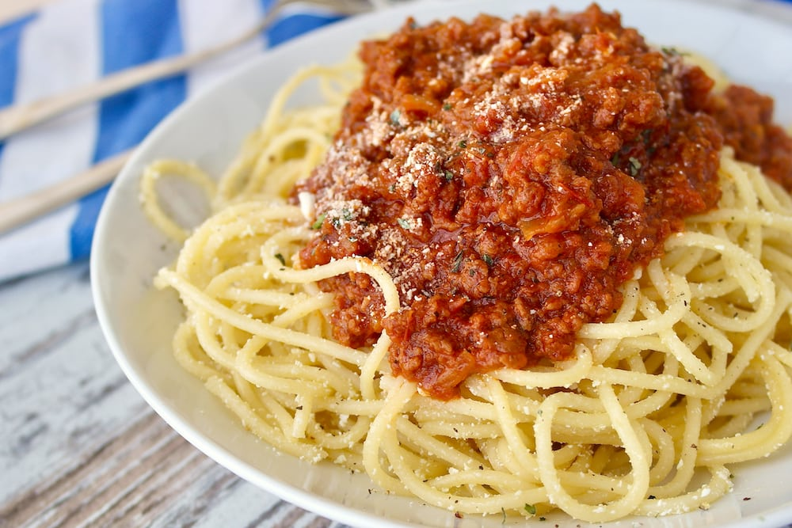

Spaghetti

Description
Spaghetti is a classic Italian pasta dish that has become a staple in many cuisines around the world.
Ingredients
- Spaghetti Pasta: Long, thin cylindrical pasta that is typically made from durum wheat semolina.
- Tomato Sauce: A flavorful sauce made from tomatoes, garlic, onions, and a variety of herbs and spices. It can be homemade or store-bought.
- Meat (Optional): Ground beef, pork, or Italian sausage are commonly used to add protein and richness to the sauce.
- Olive Oil: Used for sautéing and adding a subtle depth of flavor.
- Herbs and Spices: Commonly include basil, oregano, thyme, and sometimes red pepper flakes for a hint of heat.
- Parmesan Cheese: Grated Parmesan or Pecorino Romano cheese is often sprinkled on top for added flavor.
Steps
- Cooking the Pasta: Spaghetti is boiled in salted water until al dente, then drained. Al dente means the pasta is cooked to be firm when bitten.
- Making the Sauce: In a separate pan, a tomato sauce is prepared by sautéing onions and garlic in olive oil. Meat, if used, is browned and cooked in the sauce. Crushed or diced tomatoes are added, along with herbs and spices. The sauce simmers to allow the flavors to meld and develop.
- Combining Pasta and Sauce: The cooked spaghetti is then tossed in the simmered tomato sauce, ensuring that each strand is coated in the flavorful mixture.